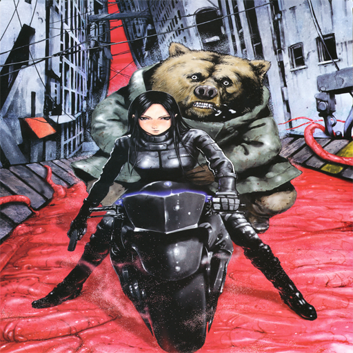

Processamento Digital de Imagens(DCA0445)
Daniel Brito Fernandes - Pablo Favero de Siqueira
Introdução
Esta página é destinada a apresentação de trabalhos realizado na disciplina de Processamento Digital de Imagens, cursada na Universidade Federal do Rio Grande do Norte (UFRN), ministrada pelo professor Agostinho de Medeiros Brito Junior, onde a disciplina é coordenada pelo departamento de Engenharia da Computação.
I Unidade
3. Manipulando pixels em uma imagem
3.2a Negativa de uma região da imagem
O exercício desenvolvido mostra a implementação do algoritmo regions.cpp, onde o mesmo solicita ao usuário a inserção de pontos iniciais e finais em coordenadas x e y, onde com esses valores é gerado um negativo na imagem desejada.
Com os valores conhecidos o algoritmo calcualar o inverso da imagem e mostra a imagem com a área desejada em negativo, para o exemplo foram usadas as coordenadas iniciais 10 para X e 70 para Y, as coordenadas finais foram 170 para X e 110 Y. Abaixo segue o código e a imagem resultado.
Código
Resultado:

3.2b Troca de Regiões
O exercicio solicita que devemos fazer a troca de posiçoes das regiões da foto, assim o algoritmo randomiza a altura e largura e assim separa as regiões. Segue abaixo o código e o resultado obtido.
Código


Foto Original
Resultado:

4. Preenchendo regiões
4.2a Preenchendo regiões
A representação das imagem variam entre 0 a 255, com isso para representar imagens com mas de 255 elementos ficar impossivel pois não vai ocorre mas niveis disponiveis para executar a rotulação. Uma possivel solução será altera o algoritmo floodFill onde ele vai identificar o número de niveis disponiveis.
4.2b Identificação
Usando o algoritmo apresentado conseguimos gera o resultado desejado no exercicio, abaixo esta o código comentado e o resultado obtido, onde no resultado os locais em preto significa os locais onde as bolhas tinham buracos.
Código


Resultado:
5. Manipulação de Histograma
5.2a Equalização de HIstograma
Para realização da atividade submetida desenvolvemos o algoritmo equalize.cpp, usando como base o conhecimentos do algoritmo.cpp descrito no tutorial, para captura da imagem foi utilizada uma webcam simples, presente em qualquer computador pessoal. Na imagem abaixo vai ser demostrado o nosso código onde mostra a realização do cálculo do histrogama da imagem original feito pela função calcHist() onde ele recebe alguns argumentos, depois do calculo do histograma e feita a equalização através da função equalizeHist(), onde é contem dois parâmetro onde o primeiro significa a matriz da imagem original e o segundo representa a imagem equalizada.
Segue abaixo o algoritmo equalize.cpp e os resultados.
Código


Resultado:
Original
Equalizada
6. Filtragem no domínio espacial I
6. Filtragem no domínio espacial II
II Unidade
8. Filtragem no domínio da frequência
8.2 Filtro homomórfico
Utilizando o programa exemplos/dft.cpp como referência, implemente o filtro homomórfico para melhorar imagens com iluminação irregular. Crie uma cena mal iluminada e ajuste os parâmetros do filtro homomórfico para corrigir a iluminação da melhor forma possível. Assuma que a imagem fornecida em tons de cinza.
Atraves do modelo de iluminação-refletância podemos trabalha no dominio da frequência para melhorar a aparência de uma imagem, onde essa imagem vem a ser expressa como o produto das componentes de iluminação i(x,y) e refletância r(x,y), o efeitos de iluminação ficam associados às baixas frequências e os da reflectância às altas frequências.
f(x,y) = i(x,y)r(x,y)
Para da transformada de Fourier as componentes de iluminação e reflectância não podem ser usadas diretamente devido o produto não é o produto das transformadas, portanto:
z(x,y) = ln i(x,y)+ ln r(x,y)
Os passos para obtenção da imagem filtrada são os seguintes:
f(x,y) --> ln --> DFT --> Filtro --> DFT-¹ --> exp --> g(x,y)
Abaixo segue o código e os resultados obtidos.
#include
#include
#include
#define RADIUS 20
using namespace cv;
using namespace std;
// troca os quadrantes da imagem da DFT
void deslocaDFT(Mat& image){
Mat tmp, A, B, C, D;
// se a imagem tiver tamanho impar, recorta a regiao para
// evitar cópias de tamanho desigual
image = image(Rect(0, 0, image.cols & -2, image.rows & -2));
int cx = image.cols / 2;
int cy = image.rows / 2;
// reorganiza os quadrantes da transformada
// A B -> D C
// C D B A
A = image(Rect(0, 0, cx, cy));
B = image(Rect(cx, 0, cx, cy));
C = image(Rect(0, cy, cx, cy));
D = image(Rect(cx, cy, cx, cy));
// A <-> D
A.copyTo(tmp); D.copyTo(A); tmp.copyTo(D);
// C <-> B
C.copyTo(tmp); B.copyTo(C); tmp.copyTo(B);
}
int main(int, char**){
int gamma_low_s = 0;
int gamma_high_s = 0;
int c_s = 0;
int d0_s = 0;
int gamma_low_s_max = 1000;
int gamma_high_s_max = 1000;
int cmax = 1000;
int d0max = 1000;
float gammal, gammah, c, d0;
Mat imaginaryInput, complexImage, multsp;
Mat padded, filter, mag, imagemfinal;
Mat image, imagegray, tmp;
Mat_ realInput, zeros;
vector planos;
image = imread("image.jpg", CV_LOAD_IMAGE_GRAYSCALE);
imwrite("originalgray.jpg", image);
// valor do ruido
float mean;
// guarda tecla capturada
char key;
// valores ideais dos tamanhos da imagem
// para calculo da DFT
int dft_M, dft_N;
while (true) {
// identifica os tamanhos otimos para
// calculo do FFT
dft_M = getOptimalDFTSize(image.rows);
dft_N = getOptimalDFTSize(image.cols);
// realiza o padding da imagem
copyMakeBorder(image, padded, 0,
dft_M - image.rows, 0,
dft_N - image.cols,
BORDER_CONSTANT, Scalar::all(0));
// parte imaginaria da matriz complexa (preenchida com zeros)
zeros = Mat_::zeros(padded.size());
// prepara a matriz complexa para ser preenchida
complexImage = Mat(padded.size(), CV_32FC2, Scalar(0));
// a função de transferência (filtro frequencial) deve ter o
// mesmo tamanho e tipo da matriz complexa
filter = complexImage.clone();
// cria uma matriz temporária para criar as componentes real
// e imaginaria do filtro ideal
tmp = Mat(dft_M, dft_N, CV_32F);
int M = dft_M, N = dft_N;
// prepara o filtro homomorfico
for (int i = 0; i(i, j) = (gammah - gammal)*(1.0 - exp(-1.0*c*(((i - M / 2.0)*(i - M / 2.0) + (j - N / 2.0)*(j - N / 2.0)) / (d0*d0)))) + gammal;
}
}
// cria a matriz com as componentes do filtro e junta
// ambas em uma matriz multicanal complexa
Mat comps[] = { tmp, tmp };
merge(comps, 2, filter);
namedWindow("Imagem", 1);
imagegray = image.clone();
createTrackbar("Gamma High", "Imagem", &gamma_high_s, gamma_high_s_max, NULL);
createTrackbar("Gamma Low", "Imagem", &gamma_low_s, gamma_low_s_max, NULL);
createTrackbar("C", "Imagem", &c_s, cmax, NULL);
createTrackbar("D0", "Imagem", &d0_s, d0max, NULL);
// realiza o padding da imagem
copyMakeBorder(imagegray, padded, 0,
dft_M - image.rows, 0,
dft_N - image.cols,
BORDER_CONSTANT, Scalar::all(0));
// limpa o array de matrizes que vao compor a
// imagem complexa
planos.clear();
// cria a compoente real
realInput = Mat_(padded);
// insere as duas componentes no array de matrizes
planos.push_back(realInput);
planos.push_back(zeros);
// combina o array de matrizes em uma unica
// componente complexa
merge(planos, complexImage);
// calcula o dft
dft(complexImage, complexImage);
// realiza a troca de quadrantes
deslocaDFT(complexImage);
// aplica o filtro frequencial
mulSpectrums(complexImage, filter, complexImage, 0);
// limpa o array de planos
planos.clear();
// separa as partes real e imaginaria para modifica-las
split(complexImage, planos);
// usa o valor medio do espectro para dosar o ruido
mean = abs(planos[0].at(dft_M / 2, dft_N / 2));
// recompoe os planos em uma unica matriz complexa
merge(planos, complexImage);
// troca novamente os quadrantes
deslocaDFT(complexImage);
// calcula a DFT inversa
idft(complexImage, complexImage);
// limpa o array de planos
planos.clear();
// separa as partes real e imaginaria da
// imagem filtrada
split(complexImage, planos);
// normaliza a parte real para exibicao
normalize(planos[0], planos[0], 0, 1, CV_MINMAX);
//exibir a imagem original quando os parametros estiverem inalterados
if (gamma_low_s == 0 && gamma_high_s == 0 && c_s == 0 && d0_s == 0){
imshow("Imagem", image);
}
else
{
imshow("Imagem", planos[0]);
}
key = (char)waitKey(10);
if (key == 27) break; // esc pressed!
switch (key)
{
//Salvar a imagem pressionando s
case 's':
normalize(planos[0], imagemfinal, 0, 255, CV_MINMAX);
imwrite("filtrada.jpg", imagemfinal);
cout << "Salvo" << endl;
break;
}
}
return 0;
}
Imagem Original
Imagem em escala de cinza
Imagem com o filtro em trabalho
11. Canny e a arte do pontilhismo
11.2 pontilhismo
A atividade deseja atraves usar as bordas produzidas pelo algoritmo de Canny para criar uma imagem em pontilhismo, no desenvolvimento da atividade foi realizado circulos nos locais de bordas.
Imagem original
Imagem sem o filtro
Imagem com o uso do filtro